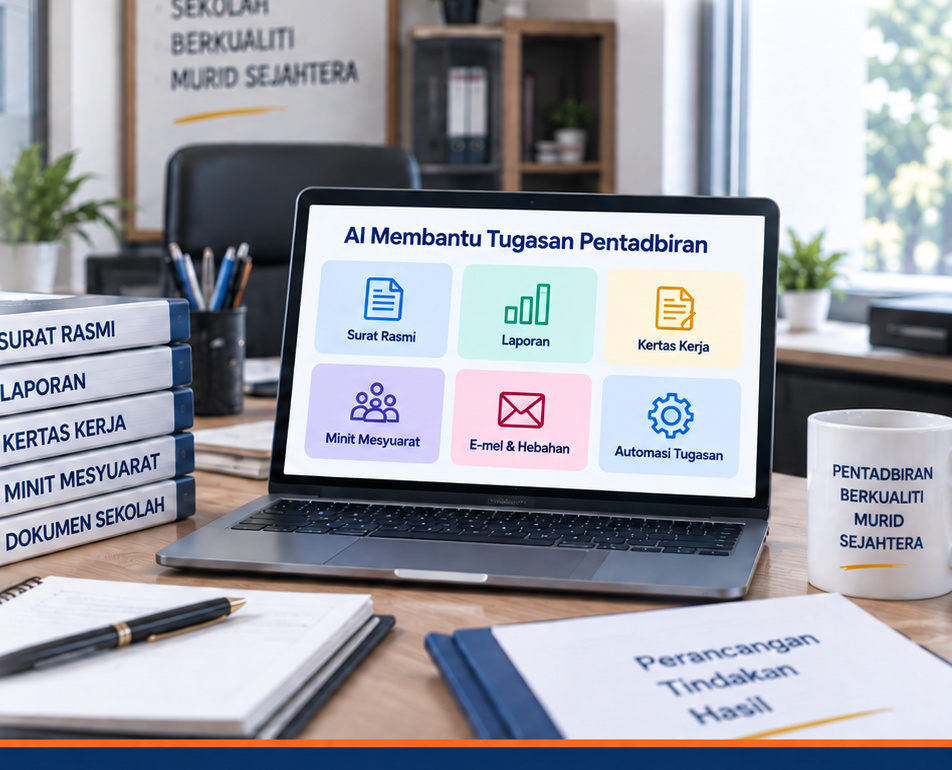

PraktikalBerfokus kepada tugasan sebenar
9 September 2026SK Seri Bahagia, Benut
Kursus Kecerdasan Buatan (AI)
AI untuk
Pentadbir Sekolah
Daripada produktiviti kepada pentadbiran yang lebih cekap
Pembelajaran praktikal menggunakan AI untuk membantu tugasan sebenar pentadbir sekolah.

BerperingkatDaripada asas kepada aplikasi
Mudah diaplikasiTerus boleh digunakan di sekolah
BeretikaSelamat, bertanggungjawab dan berpandukan garis panduan
Pembelajaran Anda
Dua sesi utama, satu pengalaman pembelajaran yang lengkap.
Sesi 2
Alat AI untuk
Alat AI untuk
Produktiviti
Kenali alat AI utama, bina prompt yang lebih baik dan gunakan AI secara bertanggungjawab.
- ChatGPT, Gemini dan Copilot
- 6 elemen prompt berkesan
- Aplikasi praktikal dalam tugasan harian
- Keselamatan dan etika penggunaan AI
Sesi 3
AI untuk Pentadbiran
AI untuk Pentadbiran
& Automasi Tugasan Pejabat
Gunakan AI untuk dokumen, mesyuarat, tindakan susulan, perancangan dan aliran kerja pentadbiran.
- Surat rasmi, laporan dan kertas kerja
- Minit mesyuarat dan pelan tindakan
- Pelbagai format komunikasi
- Perancangan program dan automasi

Daripada Belajar kepada Menggunakan
Ikuti langkah mudah ini sepanjang kursus.
Peserta
23 Guru Besar + 23 Penolong Kanan = 46 peserta
Sekolah dalam Zon Benut
Anjuran
Universiti Teknologi Malaysia
Persatuan Guru Besar Malaysia Zon Benut
Maklumat Program
Lihat tentatif lengkap, poster rasmi dan maklumat lanjut.
Akses Pantas
Muat turun bahan penting untuk rujukan.